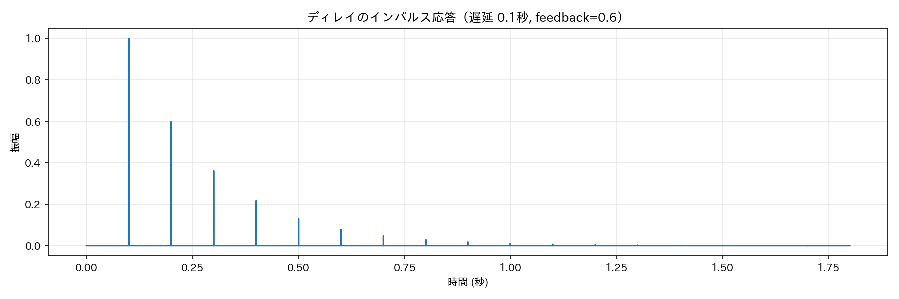
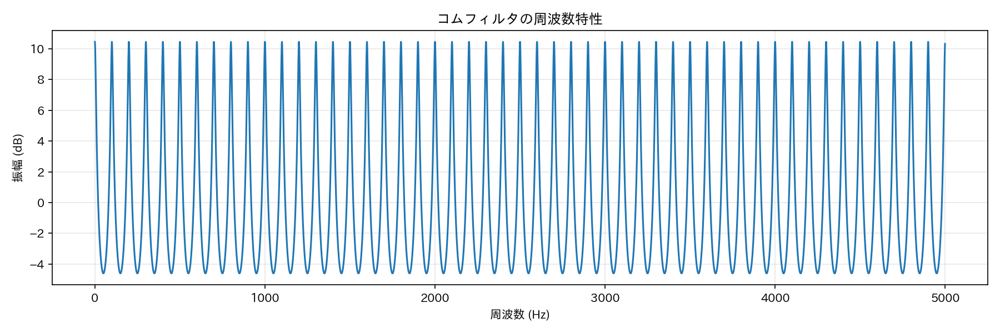
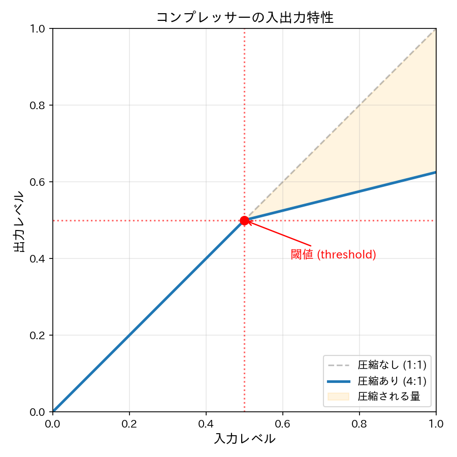
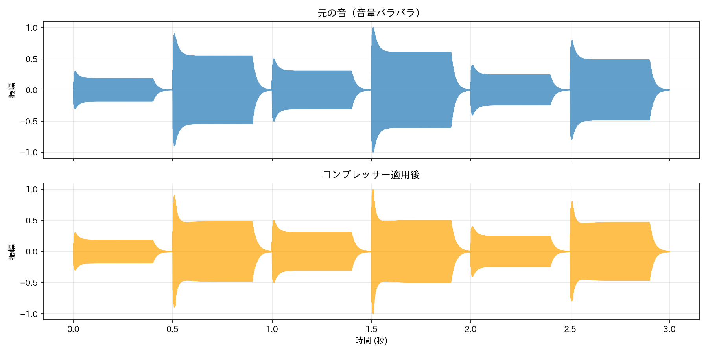

Lesson 9: エフェクトの原理¶

このレッスンで学ぶこと¶
- リバーブ、ディレイ、コーラスがどのような仕組みで音を加工しているかを理解する
- ディレイラインとコムフィルタの原理を学ぶ
- コンプレッサーによるダイナミクス処理の基本を学ぶ
- エフェクトチェーンの順序が音に与える影響を理解する
Lesson 8 ではエンベロープ（ADSR）を使って音に「表情」をつけました。次はその音を空間に置いてみましょう。コンサートホールで聞く音には残響（リバーブ）があり、山に向かって叫べばこだま（ディレイ）が返ってきます。こうした音の加工をエフェクト（effect）と呼びます。このレッスンでは、まずエフェクトの効果を体験してから、その仕組みを Python で理解していきます。
9.1 エフェクトとは何か¶
エフェクトとは、音声信号を入力として受け取り、何らかの処理を加えて出力する仕組みです。楽器の音を録音した後の仕上げ（ミキシング）や、ライブ演奏でのリアルタイム加工に使われます。
主なエフェクトの分類¶
| 分類 | エフェクト | 効果 |
|---|---|---|
| 空間系 | リバーブ | 残響を加え、空間的な広がりを与える |
| 空間系 | ディレイ | 音を遅延させてエコーを作る |
| モジュレーション系 | コーラス | 音を揺らして厚みを与える |
| ダイナミクス系 | コンプレッサー | 音量差を小さくして聞きやすくする |
ドライ音とウェット音¶
エフェクト処理では、元の音をドライ（dry）、エフェクトがかかった音をウェット（wet）と呼びます。最終的な出力はドライ音とウェット音を混ぜたものです。ウェットレベル（wet_level）を上げるとエフェクトが強くなり、下げると原音に近づきます。
9.2 エフェクトを体験する¶
まずは耳で体験しましょう。ここでは Spotify が開発したオーディオ処理ライブラリ pedalboard を使います。プロ品質のエフェクトを手軽に試せるライブラリです。
テスト用のピアノ風の音を準備します。
import numpy as np
from IPython.display import display
from audio_lib import sine_wave, adsr, AudioSignal
from audio_lib.notebook import play_sound, apply_effect
def create_test_sound(freq=440, duration=2.0):
"""テスト用ピアノ風の音"""
wave = sine_wave(freq, duration)
env = adsr(duration, attack=0.01, decay=0.3, sustain=0.4, release=0.5)
return AudioSignal(wave.data * env.data, 44100)
dry = create_test_sound()
display(play_sound(dry, "ドライ音（エフェクトなし）"))
リバーブを体験する¶
from pedalboard import Reverb
reverb = Reverb(room_size=0.8, damping=0.5, wet_level=0.3)
wet = apply_effect(dry, reverb)
display(play_sound(wet, "リバーブあり（大きな部屋）"))
apply_effect は pedalboard のエフェクトを AudioSignal に適用するヘルパー関数です。ドライ音と聞き比べると、リバーブをかけた音は空間的な広がりがあり、音の余韻が長くなっています。
ディレイを体験する¶
from pedalboard import Delay
delay = Delay(delay_seconds=0.3, feedback=0.4, mix=0.5)
wet_delay = apply_effect(dry, delay)
display(play_sound(wet_delay, "ディレイあり（0.3秒のエコー）"))
ディレイをかけると、元の音の後に一定間隔でエコーが繰り返されます。feedback を大きくするとエコーの回数が増え、delay_seconds を変えるとエコーの間隔が変わります。
コーラスを体験する¶
from pedalboard import Chorus
chorus = Chorus(rate_hz=2.0, depth=0.25, mix=0.4)
wet_chorus = apply_effect(dry, chorus)
display(play_sound(wet_chorus, "コーラスあり"))
コーラスをかけると、1人で弾いているのに複数人で弾いているような厚みが出ます。
9.3 ディレイラインの原理¶
体験ができたところで、仕組みを見ていきましょう。最も基本的なエフェクトであるディレイから始めます。
仕組み¶
ディレイの原理はシンプルです。入力信号をバッファ（配列）に一定時間蓄え、遅れて取り出した信号を元の信号に混ぜます。さらに、出力の一部をバッファに戻す（フィードバック）ことで、エコーが繰り返されます。
自分で実装してみよう¶
def simple_delay(signal, delay_sec=0.3, feedback=0.4, wet_level=0.5,
sample_rate=44100):
"""シンプルなディレイエフェクト"""
delay_samples = int(delay_sec * sample_rate)
data = signal.data
output = np.zeros(len(data) + delay_samples * 5) # エコーの余韻分を確保
buf = np.zeros(delay_samples)
idx = 0
for n in range(len(data)):
# バッファから遅延信号を取り出す
delayed = buf[idx]
# 入力 + フィードバックをバッファに書き込む
buf[idx] = data[n] + feedback * delayed
# ドライ音とウェット音を混ぜる
output[n] = (1.0 - wet_level) * data[n] + wet_level * delayed
idx = (idx + 1) % delay_samples
# 残りのバッファを処理（余韻）
for n in range(len(data), len(output)):
delayed = buf[idx]
buf[idx] = feedback * delayed
output[n] = wet_level * delayed
idx = (idx + 1) % delay_samples
return AudioSignal(np.clip(output, -1.0, 1.0), sample_rate)
ポイントは循環バッファ（circular buffer）です。idx が配列の末尾に達したら先頭に戻る（% delay_samples）ことで、固定長の配列で無限に遅延を処理できます。
dry = create_test_sound()
wet_self = simple_delay(dry, delay_sec=0.3, feedback=0.4, wet_level=0.5)
display(play_sound(dry, "元の音"))
display(play_sound(wet_self, "自作ディレイ（0.3秒, feedback=0.4）"))
インパルス応答で仕組みを確認する¶
ディレイの動作を視覚的に理解するために、インパルス（一瞬だけ 1.0 になる信号）を入力してみましょう。
import matplotlib.pyplot as plt
# インパルス信号を作成
impulse = np.zeros(44100) # 1秒
impulse[0] = 1.0
impulse_signal = AudioSignal(impulse, 44100)
# ディレイに通す
delay_out = simple_delay(impulse_signal, delay_sec=0.1, feedback=0.6, wet_level=1.0)
plt.figure(figsize=(12, 4))
t = np.arange(len(delay_out.data)) / 44100
plt.plot(t, delay_out.data)
plt.title("ディレイのインパルス応答（遅延 0.1秒, feedback=0.6）")
plt.xlabel("時間 (秒)")
plt.ylabel("振幅")
plt.grid(True, alpha=0.3)
plt.tight_layout()
plt.show()

0.1 秒間隔で振幅が小さくなりながらパルスが繰り返されています。これがエコーの正体です。フィードバック値（0.6）を掛けるたびに振幅が 60% になるので、次第に消えていきます。
9.4 コムフィルタとリバーブの仕組み¶
コムフィルタ¶
実は 9.3 節のディレイのウェット信号だけを取り出すと、コムフィルタ（comb filter）になります。コムフィルタはリバーブの基本構成要素です。
def simple_comb_filter(signal, delay_sec=0.03, feedback=0.7,
sample_rate=44100):
"""シンプルなコムフィルタ"""
delay_samples = int(delay_sec * sample_rate)
data = signal.data
buf = np.zeros(delay_samples)
idx = 0
output = np.zeros_like(data)
for n in range(len(data)):
delayed = buf[idx]
buf[idx] = data[n] + feedback * delayed
output[n] = delayed
idx = (idx + 1) % delay_samples
return AudioSignal(output, sample_rate)
ディレイとの違いは、出力が遅延信号のみ（output[n] = delayed）である点です。ドライ音を混ぜません。
dry = create_test_sound()
comb_out = simple_comb_filter(dry, delay_sec=0.03, feedback=0.8)
display(play_sound(dry, "元の音"))
display(play_sound(comb_out, "コムフィルタ通過後（遅延 30ms, feedback=0.8）"))
遅延時間が短い（30ms）ので、個々のエコーは聞き取れませんが、音に金属的な響きが加わります。これがリバーブの「種」です。
なぜ「コム」フィルタなのか¶
コムフィルタの周波数特性をプロットすると、「くし」（comb）のような形になります。特定の周波数が強められ、その間の周波数が弱められるためです。
# コムフィルタのインパルス応答を計算
impulse = np.zeros(44100)
impulse[0] = 1.0
impulse_signal = AudioSignal(impulse, 44100)
comb_impulse = simple_comb_filter(impulse_signal, delay_sec=0.01, feedback=0.7)
# 周波数特性を表示
from scipy.fft import fft
spectrum = np.abs(fft(comb_impulse.data))
freqs = np.arange(len(spectrum)) / len(spectrum) * 44100
plt.figure(figsize=(12, 4))
plt.plot(freqs[:5000], 20 * np.log10(spectrum[:5000] + 1e-10))
plt.title("コムフィルタの周波数特性")
plt.xlabel("周波数 (Hz)")
plt.ylabel("振幅 (dB)")
plt.grid(True, alpha=0.3)
plt.tight_layout()
plt.show()

くし状の山と谷が等間隔に並んでいます。山の間隔は 1 / delay_sec Hz です（遅延 0.01 秒なら 100 Hz 間隔）。ここでは scipy.fft を使って周波数特性を表示しましたが、FFT（高速フーリエ変換）の仕組みについては Lesson 13 で詳しく学びます。
Schroeder リバーブ¶
1つのコムフィルタだけでは不自然な金属的響きになります。実用的なリバーブは、遅延時間の異なるコムフィルタを並列に配置し、その出力をオールパスフィルタに通して反響パターンを拡散させます。この構成を Schroeder リバーブと呼びます。
- 並列コムフィルタ: 異なる遅延時間で密度の高い反響を生成する
- オールパスフィルタ: 振幅は変えずに位相だけをずらし、規則的なパターンを散らす
audio_lib の Reverb クラスはこの Schroeder 方式で実装されています。
from audio_lib import Reverb as SimpleReverb
dry = create_test_sound()
# audio_lib のリバーブ（Schroeder 方式）
simple_reverb = SimpleReverb(room_size=0.8, damping=0.3, wet_level=0.5)
simple_out = simple_reverb.process(dry)
# pedalboard のリバーブ（プロ品質）
pro_reverb = Reverb(room_size=0.8, damping=0.3, wet_level=0.5)
pro_out = apply_effect(dry, pro_reverb)
display(play_sound(dry, "元の音"))
display(play_sound(simple_out, "audio_lib（Schroeder 方式）"))
display(play_sound(pro_out, "pedalboard（プロ品質）"))
自前の Schroeder 方式でもリバーブの雰囲気は出ますが、pedalboard のほうがより密度が高く自然な残響です。プロ品質のリバーブは、さらに多くのフィルタや工夫が組み込まれています。
9.5 コーラスの原理¶
コーラスは「ディレイ時間が揺れるディレイ」です。人間の合唱で複数の歌い手のピッチやタイミングが微妙にずれることで音に厚みが出るのと同じ原理です。
仕組み¶
ディレイラインの遅延時間を LFO（Low Frequency Oscillator、低周波発振器）で周期的に変化させます。遅延時間が変わると音のピッチがわずかに上下するため、原音と混ぜると複数の音が鳴っているような効果が得られます。
LFO の速さ（rate）を上げると揺れが速くなりビブラートに近づき、深さ（depth）を上げるとピッチの変動幅が大きくなります。
パラメータと音の関係¶
| パラメータ | 小さい | 大きい |
|---|---|---|
| rate（速度） | ゆったりした揺れ（コーラス） | 速い揺れ（ビブラート的） |
| depth（深さ） | 微妙な効果 | 明確なピッチ変動 |
| wet_level | 薄いコーラス | 強いコーラス |
dry = create_test_sound(duration=3.0)
# 遅いコーラス（自然な広がり）
chorus_slow = Chorus(rate_hz=1.5, depth=0.25, mix=0.4)
display(play_sound(apply_effect(dry, chorus_slow), "遅いコーラス（rate=1.5Hz）"))
# 速いコーラス（ビブラート的）
chorus_fast = Chorus(rate_hz=6.0, depth=0.15, mix=0.5)
display(play_sound(apply_effect(dry, chorus_fast), "速いコーラス（rate=6.0Hz）"))
9.6 コンプレッサー — ダイナミクス処理の基本¶
ここまでのエフェクトは音の「空間」や「厚み」を加工するものでした。コンプレッサー（compressor）は音の「音量」を制御するエフェクトです。
コンプレッサーの役割¶
音量が大きい部分を抑えて、全体の音量差を小さくします。これにより、小さな音と大きな音のバランスが取れて聞きやすくなります。ポッドキャストの収録やポップス音楽のマスタリングで広く使われています。
パラメータ¶
| パラメータ | 説明 |
|---|---|
| threshold（閾値） | この音量を超えた部分を圧縮する（0.0〜1.0） |
| ratio（圧縮比） | 超えた分をどれだけ圧縮するか（例: 4:1 なら 4dB 超過 → 1dB に） |
| attack | 圧縮が始まるまでの反応時間 |
| release | 圧縮が解除されるまでの復帰時間 |

図はコンプレッサーの入出力特性です。閾値（threshold）までは入力がそのまま出力されますが、閾値を超えると傾きが緩やかになり、出力が抑えられます。グレーの破線が圧縮なし（1:1）の場合で、オレンジの領域が圧縮によって削られる量です。圧縮比（ratio）が大きいほど傾きが緩くなり、強く圧縮されます。
シンプルなコンプレッサーを実装する¶
def simple_compressor(signal, threshold=0.5, ratio=4.0,
attack=0.01, release=0.1, sample_rate=44100):
"""シンプルなコンプレッサー"""
data = signal.data
output = np.zeros_like(data)
envelope = 0.0
# アタック・リリースの係数（指数的な追従）
attack_coeff = np.exp(-1.0 / (attack * sample_rate))
release_coeff = np.exp(-1.0 / (release * sample_rate))
for n in range(len(data)):
current_level = abs(data[n])
# エンベロープ追従（音量の包絡線を検出）
if current_level > envelope:
envelope += (current_level - envelope) * (1 - attack_coeff)
else:
envelope += (current_level - envelope) * (1 - release_coeff)
# 閾値を超えた部分を圧縮
if envelope > threshold:
excess = envelope - threshold
target = threshold + excess / ratio
gain = target / envelope
else:
gain = 1.0
output[n] = data[n] * gain
return AudioSignal(output, sample_rate)
Lesson 8 で学んだエンベロープの概念がここで再登場します。コンプレッサーは入力信号のエンベロープ（音量の包絡線）を検出し、閾値を超えた部分のゲイン（倍率）を下げる仕組みです。
動作を確認する¶
音量が大きく変動する音を作って、コンプレッサーの効果を確認しましょう。
from audio_lib import note_to_frequency
# 音量にばらつきのある音を作成
notes = [60, 64, 67, 72, 67, 64] # C4, E4, G4, C5, G4, E4
amplitudes = [0.3, 0.9, 0.5, 1.0, 0.4, 0.8] # 音量がバラバラ
parts = []
for midi_num, amp in zip(notes, amplitudes):
freq = note_to_frequency(midi_num)
wave = sine_wave(freq, 0.5)
env = adsr(0.5, attack=0.01, decay=0.1, sustain=0.6, release=0.1)
shaped = AudioSignal(wave.data * env.data * amp, 44100)
parts.append(shaped.data)
dynamic = AudioSignal(np.concatenate(parts), 44100)
compressed = simple_compressor(dynamic, threshold=0.4, ratio=4.0)
display(play_sound(dynamic, "元の音（音量バラバラ）"))
display(play_sound(compressed, "コンプレッサー適用後"))
波形を比較する¶
fig, axes = plt.subplots(2, 1, figsize=(12, 6), sharex=True)
t = np.arange(len(dynamic.data)) / 44100
axes[0].plot(t, dynamic.data, alpha=0.7)
axes[0].set_title("元の音（音量バラバラ）")
axes[0].set_ylabel("振幅")
axes[0].set_ylim(-1.1, 1.1)
axes[0].grid(True, alpha=0.3)
axes[1].plot(t, compressed.data, alpha=0.7, color='orange')
axes[1].set_title("コンプレッサー適用後")
axes[1].set_xlabel("時間 (秒)")
axes[1].set_ylabel("振幅")
axes[1].set_ylim(-1.1, 1.1)
axes[1].grid(True, alpha=0.3)
plt.tight_layout()
plt.show()

元の音では振幅に大きなばらつきがありますが、コンプレッサーを通すと大きな音が抑えられ、全体の音量が均一に近づいています。
9.7 エフェクトチェーンの順序¶
複数のエフェクトを組み合わせる場合、適用する順序によって結果が変わります。
from pedalboard import Pedalboard
dry = create_test_sound(duration=2.0)
# チェーン1: リバーブ → ディレイ
chain1 = Pedalboard([
Reverb(room_size=0.9, damping=0.2, wet_level=0.7),
Delay(delay_seconds=0.4, feedback=0.5, mix=0.6),
])
out1 = apply_effect(dry, chain1)
# チェーン2: ディレイ → リバーブ
chain2 = Pedalboard([
Delay(delay_seconds=0.4, feedback=0.5, mix=0.6),
Reverb(room_size=0.9, damping=0.2, wet_level=0.7),
])
out2 = apply_effect(dry, chain2)
display(play_sound(out1, "チェーン1: リバーブ → ディレイ"))
display(play_sound(out2, "チェーン2: ディレイ → リバーブ"))
聞き比べてみましょう。
- リバーブ → ディレイ: 残響音にエコーがかかるため、リズミカルな反復が聞こえる
- ディレイ → リバーブ: エコーに残響がかかるため、音が滑らかに溶け合う
エフェクトは「後段が前段の出力を加工する」ので、順序を変えると結果が変わります。一般的な音楽制作では、コンプレッサー → コーラス → ディレイ → リバーブの順が定番とされていますが、目的に応じて試行錯誤するのが大切です。
まとめ¶
このレッスンで学んだことを整理します。
| 概念 | 内容 |
|---|---|
| エフェクト | 音声信号を加工する処理。空間系・モジュレーション系・ダイナミクス系など |
| ドライ / ウェット | 原音（dry）とエフェクト音（wet）の混合で出力を作る |
| ディレイ | 循環バッファで音を遅延させ、フィードバックでエコーを生む |
| コムフィルタ | 短い遅延 + フィードバック。リバーブの基本構成要素 |
| Schroeder リバーブ | 並列コムフィルタ + 直列オールパスフィルタの構成 |
| コーラス | 遅延時間を LFO で揺らすことで音に厚みを与える |
| コンプレッサー | エンベロープを検出し、閾値を超えた音量を圧縮する |
| エフェクトチェーン | 複数エフェクトの適用順序が結果に影響する |
使った audio_lib の機能¶
| クラス / 関数 | 役割 |
|---|---|
Reverb |
Schroeder 方式リバーブ |
Delay |
ディレイエフェクト |
Chorus |
コーラスエフェクト |
Compressor |
コンプレッサー |
apply_effect() |
pedalboard エフェクトを AudioSignal に適用 |
Lesson 8 との対応¶
| Lesson 8（エンベロープ） | Lesson 9（エフェクト） |
|---|---|
| ADSR で音の「時間的な形」を制御 | エフェクトで音の「空間・質感」を制御 |
| エンベロープ = 振幅の包絡線 | コンプレッサーがエンベロープ追従で動作 |
次回予告¶
Lesson 10 では Sonic Pi で エンベロープと FX を扱います。Lesson 8 で学んだ ADSR と、このレッスンで学んだエフェクトの原理を、Sonic Pi の attack:, release:, :reverb, :echo で実践します。